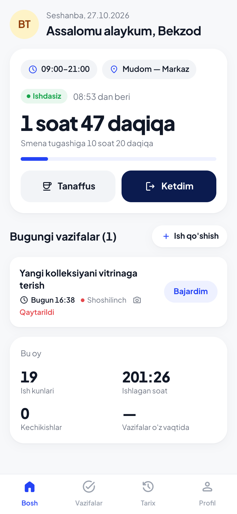
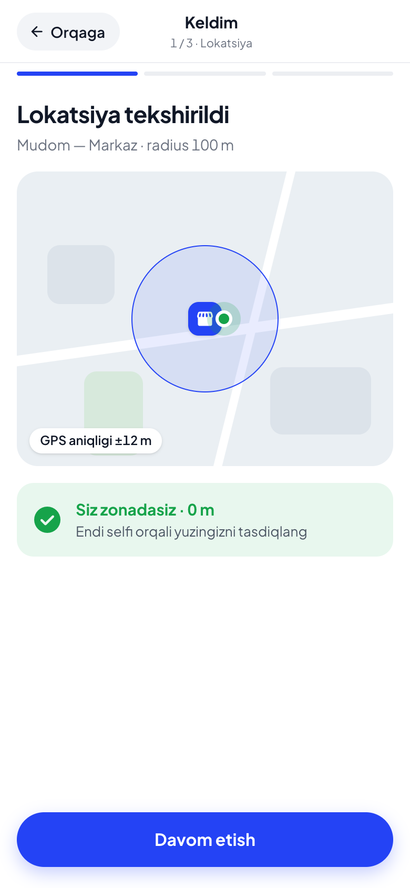
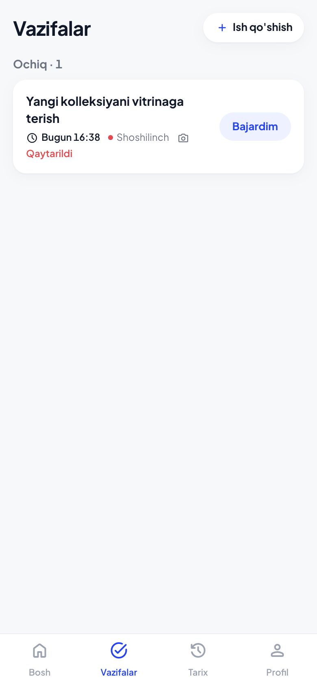
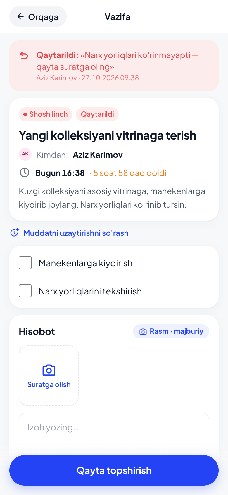
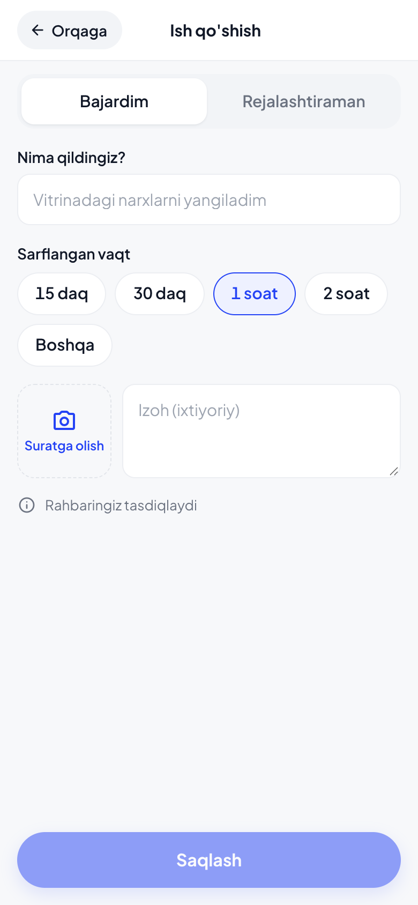
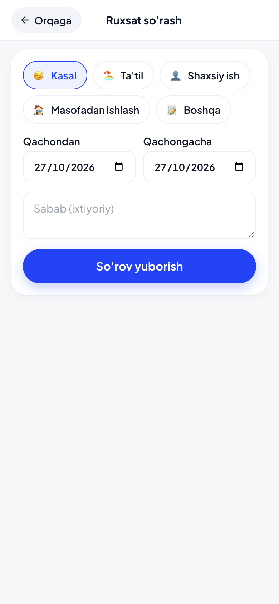
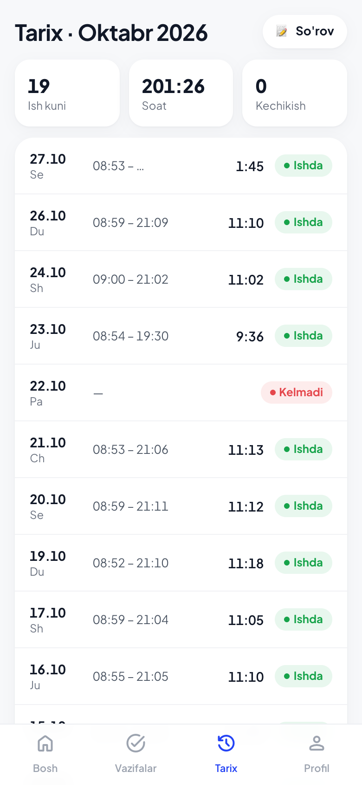
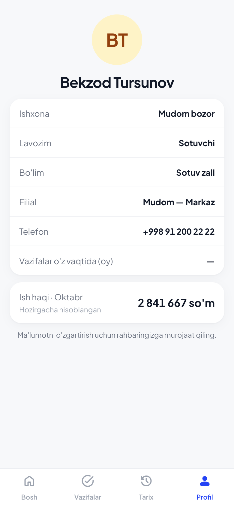

Rahbar tasdiqlagach botdan «🎉 … sizni tasdiqladi» xabari keladi.
Ishga kelganda «✅ Keldim»: jonli joylashuv + dumaloq video. Ketayotganda «🏁 Ketdim»: jonli joylashuv.
Vazifalar, so'rovlar, tarix — botdagi tugmalar yoki chat menyusidagi «Ochish» (Mini App).
Mundarija
Sizga nima kerak
Ro'yxatdan o'tish (bot)
Botning asosiy menyusi
«✅ Keldim» — botda
«🏁 Ketdim» va «📊 Bugun»
Mini App: ochish va bosh sahifa
Mini App'da Keldim / Ketdim, tanaffus
Vazifalar: qabul, bajarish, hisobot
Muddatni uzaytirish so'rovi
«➕ Ish qo'shish» — o'zingiz qilgan ish
«📝 So'rov» — ruxsat so'rash
Tarix va Profil (ish haqi)
Botdan keladigan eslatmalar
Yuz namunasini yangilash — /yuz
Ko'p uchraydigan xatolar va yechimi
Savol-javob
1 Sizga nima kerak
Nima uchun: tizim sizni Telegram orqali taniydi, davomatni esa joylashuv va yuz orqali tasdiqlaydi.
Telegram — telefoningizda o'rnatilgan va yangilangan bo'lsin (eski versiyada dumaloq video va jonli joylashuv bo'lmasligi mumkin).
Telefon raqam — rahbaringiz panelga kiritgan raqam. Botga aynan shu raqam bog'langan Telegram'dan kiring.
Taklif havolasi — rahbaringiz yuboradi, ko'rinishi: https://t.me/adoneuz_bot?start=inv_…. Havola 14 kun amal qiladi va bir marta ishlaydi.
Joylashuv (GPS) va kamera — Telegram'ga ruxsat berilgan bo'lsin (telefon sozlamalari → Telegram → Joylashuv, Kamera).
Muhim. Botga faqat o'zingiz kiring, telefoningizni boshqaga bermang: «Keldim» joylashuv va yuz bilan tekshiriladi, boshqa qurilmadan qilingan urinish rahbarga «shubhali» bo'lib ko'rinadi.
2 Ro'yxatdan o'tish (bot)
Nima uchun: bir marta qilinadi — raqam, rozilik va yuz namunasi. Shundan keyin har kuni faqat tugma bosasiz.
Rahbaringiz yuborgan taklif havolasini bosing. Bot ochiladi — pastdagi Startni bosing.
Bot salomlashadi. Pastda bitta tugma chiqadi: «📱 Raqamni yuborish» — bosing. Raqam o'zi yuboriladi (qo'lda yozilmaydi).
Rozilik matnini o'qing va «✅ Roziman»ni bosing.
Yuz namunasi: pastdagi 🎤 mikrofon belgisini bir marta bosing — u 📹 kameraga aylanadi. Uni bosib turib yuzingiz aniq ko'ringan 3–5 soniyalik dumaloq video yozing va qo'yib yuboring.
Bot «Rahmat! ✅ Ro'yxatdan o'tdingiz» deydi. Endi rahbar tasdiqlashini kuting — tasdiqlanganda xabar keladi.
a
adone davomatbot
/start inv_5ytc6wmf7309:01
Assalomu alaykum, Bekzod Tursunov!
Mudom bozor davomat tizimiga ulanyapsiz.
1-qadam: pastdagi «📱 Raqamni yuborish» tugmasini bosing.09:01
📱 Raqamni yuborish
Xabar🎤
1–2. Havola → Start → raqam tugmasi
a
adone davomatbot
📱 Kontakt: +998 91 200 22 2209:01
2-qadam: Rozilik
Davomatni tasdiqlash uchun ishxona sizning joylashuvingiz (faqat «Keldim/Ketdim» paytida), yuz tasviringiz (dumaloq video) va kelish-ketish vaqtlaringizni saqlaydi. Ma'lumotlar faqat shu ishxona rahbariyatiga ko'rinadi va ishdan bo'shaganingizda o'chiriladi.
Rozimisiz?09:01
✅ Roziman❌ Rozi emasman
Xabar🎤
3. Rozilik
a
adone davomatbot
3-qadam: yuz namunasi.
Pastdagi mikrofon belgisini bir marta bosing — u 📹 kameraga aylanadi. Keyin uni bosib turib, yuzingiz aniq ko'rinadigan 3–5 soniyalik dumaloq video yozing.09:02
⏺ dumaloq video · 0:04
09:02
Rahmat! ✅ Ro'yxatdan o'tdingiz.
Mudom bozor rahbari tasdiqlagach «✅ Keldim» tugmasi ishlaydi. Tasdiqlanganda xabar beramiz.09:02
🎉 Mudom bozor sizni tasdiqladi. Endi ishga kelganda «✅ Keldim», ketayotganda «🏁 Ketdim» tugmasini bosing.09:40
Xabar📹
4–5. Yuz namunasi → tasdiq
«Iltimos, dumaloq video yuboring» chiqsa — oddiy rasm yoki galereyadan video yuborgansiz. Faqat 📹 belgisini bosib turib yoziladigan dumaloq video qabul qilinadi.
«Bu raqam rahbaringiz kiritgan raqamga mos kelmadi» — Telegram'ingiz boshqa raqamda. Rahbaringizga to'g'ri raqamni ayting (panelda o'zgartiradi) yoki shu raqamdagi Telegram'dan kiring.
3 Botning asosiy menyusi
Nima uchun: hamma kundalik amallar shu 7 ta tugmada. Xabar yozish shart emas.
a
adone davomatbot
❓ Yordam09:05
Qanday ishlaydi
✅ Keldim — ishga kelganda: jonli joylashuv + dumaloq video.
🏁 Ketdim — ketayotganda: jonli joylashuv.
📋 Vazifalarim — sizga berilgan vazifalar: qabul qilish, «Bajardim» va hisobot.
➕ Ish qo'shish — o'zingiz qilgan yoki rejalashtirgan ish.
📝 So'rov — ruxsat so'rash (kasal, ta'til, shaxsiy).
📊 Bugun — bugungi holatingiz.
Muammo bo'lsa rahbaringizga yozing.09:05
✅ Keldim🏁 Ketdim
📋 Vazifalarim➕ Ish qo'shish
📊 Bugun📝 So'rov❓ Yordam
Xabar🎤
Asosiy menyu (pastdagi tugmalar)
Tugma
Nima qiladi
✅ Keldim
Ishga kelganingizni qayd etadi: jonli joylashuv → dumaloq video.
🏁 Ketdim
Ketganingizni qayd etadi: faqat jonli joylashuv.
📋 Vazifalarim
Ochiq vazifalaringiz ro'yxati; har birini ochib qabul qilish, boshlash, hisobot topshirish.
➕ Ish qo'shish
Rahbar bermagan, lekin o'zingiz qilgan yoki rejalashtirgan ishni kiritish.
📊 Bugun
Smena vaqti, qachon kelganingiz, ishlagan vaqtingiz.
📝 So'rov
Ruxsat so'rash: kasal, ta'til, shaxsiy ish, masofadan ishlash.
❓ Yordam
Qisqa eslatma.
Tugmalar ko'rinmasa — xabar yozish maydonining o'ng tomonidagi ⌨️ / ▦ belgisini bosing, menyu ochiladi.
Chat sarlavhasi yonidagi «Ochish» (yoki ☰ Menu) tugmasi Mini Appni ochadi — o'sha amallar chiroyli ekranlarda (6-bob).
4 «✅ Keldim» — botda
Nima uchun: davomat faqat siz filial hududida va o'zingiz bo'lsangiz qayd etiladi — shuning uchun jonli joylashuv va dumaloq video so'raladi.
Ishxonaga kirgach «✅ Keldim»ni bosing.
Bot jonli joylashuv so'raydi: 📎 (skrepka) → Joylashuv → «Jonli joylashuvni ulashish» → 15 daqiqa. Xaritadan tanlangan oddiy nuqta qabul qilinmaydi.
Bot «📍 Joylashuv tasdiqlandi» deydi. Endi 📹 belgisini bosib turib yuzingiz ko'ringan dumaloq video (3–5 soniya) yuboring.
«✅ Qabul qilindi · 08:58» — tayyor. Kechiksangiz «⚠️ Kechikdingiz: N daqiqa» qo'shiladi.
a
adone davomatbot
✅ Keldim08:57
✅ Keldim — jonli joylashuvni yuboring:
📎 (skrepka) → Joylashuv → «Jonli joylashuvni ulashish» → 15 daqiqa.
Xaritadan tanlangan oddiy nuqta qabul qilinmaydi.08:57
📍 Jonli joylashuv · 15 daqiqa
08:58
📍 Joylashuv tasdiqlandi. Endi yuzingiz ko'rinadigan dumaloq video yuboring (3–5 soniya).08:58
Xabar📹
1–3. Keldim → jonli joylashuv → video so'rovi
a
adone davomatbot
⏺ dumaloq video · 0:04
08:58
✅ Qabul qilindi · 08:58
Yaxshi ish kuni!08:58
kechikkan kunda
✅ Qabul qilindi · 09:23
⚠️ Kechikdingiz: 23 daqiqa
Yaxshi ish kuni!09:23
✅ Keldim🏁 Ketdim
📋 Vazifalarim➕ Ish qo'shish
📊 Bugun📝 So'rov❓ Yordam
4. Video → qabul qilindi
a
adone davomatbot
xato holatlari
Bu oddiy joylashuv. Iltimos, «Jonli joylashuvni ulashish»ni tanlang (📎 → Joylashuv).08:57
❌ Siz filialdan 640 m uzoqdasiz (Mudom — Markaz). Filial hududiga kirib, qaytadan yuboring.08:57
GPS aniqligi past (±180 m). Ochiq joyga chiqib, qaytadan yuboring.08:57
Vaqt o'tib ketdi. «✅ Keldim» tugmasini qaytadan bosing.09:14
Xatolar (15-bobga qarang)
Jonli joylashuvni qanday yuborish: xabar maydonidagi 📎 → Joylashuv → xarita ochiladi → pastda «Jonli joylashuvni ulashish» → muddat 15 daqiqa → Ulashish. iPhone'da ham, Android'da ham shunday. Joylashuv 2 daqiqadan eski bo'lsa yoki forward qilingan bo'lsa qabul qilinmaydi.
«🔎 Yuz tekshiruvi aniq emas — rahbar ko'rib chiqadi» qo'shilsa — davomat qayd etildi, lekin yuz namunaga unchalik o'xshamadi (yorug'lik, niqob, burchak). Rahbar videoni ko'rib tasdiqlaydi. Tez-tez takrorlansa /yuz bilan namunani yangilang (14-bob).
5 «🏁 Ketdim» va «📊 Bugun»
Nima uchun: ishlagan vaqtingiz «Ketdim»gacha hisoblanadi; unutsangiz tizim smenadan keyin o'zi yopadi va rahbarga xabar beradi.
a
adone davomatbot
🏁 Ketdim18:02
🏁 Ketdim — jonli joylashuvni yuboring:
📎 (skrepka) → Joylashuv → «Jonli joylashuvni ulashish» → 15 daqiqa.
Xaritadan tanlangan oddiy nuqta qabul qilinmaydi.18:02
📍 Jonli joylashuv · 15 daqiqa
18:03
🏁 Ketish qayd etildi · 18:03
Bugun ishladingiz: 9 soat 05 daq. Rahmat!18:03
Ketdim — faqat jonli joylashuv
a
adone davomatbot
📊 Bugun13:10
📊 Bugun
Mudom bozor
Smena: 09:00–18:00
Keldingiz: 08:58
Hozir ishdasiz
Ishlagan vaqt: 4 soat 12 daq13:10
Bugun — holatingiz
Ketayotganda «🏁 Ketdim» → jonli joylashuv yuboring (video kerak emas).
Bot ketish vaqti va bugun ishlagan vaqtingizni yozadi.
«📊 Bugun» — istalgan payt smena, kelgan vaqt va ishlagan vaqtni ko'rsatadi.
«Ketdim»ni unutsangiz smena tugaganidan 3 soat o'tgach tizim kunni o'zi yopadi («avto-yopildi») va rahbarga xabar beradi. Ishlagan vaqt kam hisoblanishi mumkin — shuning uchun ketayotganda tugmani bosing.
«Siz allaqachon ishdasiz» — bugun «Keldim» qilib bo'lgansiz. «Siz hali Keldim qilmagansiz» — avval «✅ Keldim» bosing.
6 Mini App: ochish va bosh sahifa
Nima uchun: Mini App — o'sha bot, lekin ekranlar bilan: Keldim bir bosishda, vazifalar ro'yxati, tarix va profil.

Bosh sahifa: Keldim doirasi, bugungi vazifalar, oy
Bot chatida sarlavha yonidagi (yoki xabar maydoni chapidagi) «Ochish» tugmasini bosing. Mini App Telegram ichida ochiladi — alohida o'rnatish shart emas, parol so'ralmaydi.
Bosh sahifada: katta «Keldim» doirasi (yoki ishda bo'lsangiz — ishlagan vaqt, Tanaffus va Ketdim), bugungi vazifalar, oy bo'yicha qisqa natija.
Pastdagi menyu: Bosh · Vazifalar · Tarix · Profil.
Birinchi ochilganda Telegram joylashuv va kameraga ruxsat so'raydi — ikkalasiga ruxsat bering, aks holda «Keldim» ishlamaydi.
Mini App birinchi «Keldim»da shu telefonni sizga bog'laydi. Keyin boshqa telefondan «Keldim» qilsangiz, davomat qayd etiladi, lekin rahbarga «boshqa qurilmadan» deb ko'rinadi. Telefon almashtirgan bo'lsangiz, rahbarga ayting — u eski qurilmani uzadi.
7 Mini App'da Keldim / Ketdim, tanaffus
Nima uchun: botdagi bilan bir xil tekshiruv — joylashuv va jonli selfi, lekin 20 soniyada.

1-qadam: lokatsiya tekshirildi
Bosh sahifada «Keldim» doirasini bosing. Telefon joylashuvni aniqlaydi, ekranda filialgacha masofa chiqadi (Lokatsiya tekshirildi). Hudud tashqarisida bo'lsangiz — qizil xabar, filialga kirib qayta urinasiz.
«Davom etish» → old kamera ochiladi. Ko'rsatmaga amal qiling: to'g'riga qarang → chapga → o'ngga. Tizim 3 ta kadrni o'zi oladi (bu rasmni kameraga tutib aldab bo'lmasligi uchun). Galereyadan rasm yuklab bo'lmaydi.
Natija ekrani: «Qabul qilindi · 08:58». Kechikish bo'lsa yoziladi. «Qabul qilindi, tekshiriladi» chiqsa — yuz aniq mos kelmadi, rahbar ko'radi.
Ishda bo'lganingizda bosh sahifada Tanaffus (qaytganda Davom etish) va Ketdim tugmalari. Ketdim — faqat lokatsiya, selfi so'ralmaydi.
«Kameraga ruxsat berilmadi» — telefon sozlamalari → Telegram → Kamera → ruxsat bering, Mini App'ni yopib qayta oching. Vaqtincha botdagi «✅ Keldim» (dumaloq video) bilan ham qilsa bo'ladi.
8 Vazifalar: qabul, bajarish, hisobot
Nima uchun: rahbar bergan vazifa botga keladi; siz qabul qilasiz, bajarib isbot (rasm/video/lokatsiya) bilan topshirasiz; rahbar tasdiqlaydi yoki qaytaradi.
Botda
Yangi vazifa kelganda bot karta yuboradi: nom, kimdan, muddat, muhimlik, qanday hisobot kerak. «✅ Qabul qildim»ni bosing (savol bo'lsa — «❓ Savol», matn yozasiz, rahbarga boradi).
Ishni boshlaganda «▶️ Boshladim».
Tugatgach «✅ Bajardim». Bot qanday isbot kerakligini yozadi: rasm (📷 kamera bilan), video yoki lokatsiya (📎 → Joylashuv). Fayllarni yuboring, keyin qisqa izoh yozing (izoh yuborilgach hisobot ketadi) yoki «✅ Yuborish»ni bosing.
Rahbar natijasi botga keladi: tasdiqlandi (baho ⭐ bilan) yoki qaytarildi (sabab bilan) — tuzatib «✅ Bajardim»ni qayta bosasiz.
a
adone davomatbot
📋 Yangi vazifa!Yangi kolleksiyani vitrinaga terish
Kuzgi kolleksiyani asosiy vitrinaga, manekenlarga kiydirib joylang. Narx yorliqlari ko'rinib tursin.
👤 Kimdan: Aziz Karimov
⏰ Muddat: Bugun, 18:00
🔴 Muhimlik: Shoshilinch
📷 Hisobot: rasm bilan
☑️ Bosqichlar:
• Manekenlarga kiydirish
• Narx yorliqlarini tekshirish10:02
✅ Qabul qildim❓ SavolMini App’da ochish ↗
✅ Qabul qilindi: Yangi kolleksiyani vitrinaga terish
Ishni boshlaganda «▶️ Boshladim», tugatgach «✅ Bajardim».10:03
▶️ Boshladim❓ Savol⏰ Muddatni uzaytirish
1–2. Vazifa kartasi → qabul → boshladim
a
adone davomatbot
✅ Hisobot: Yangi kolleksiyani vitrinaga terish
Talab: rasm.
Yuboring, keyin izoh yozing yoki «✅ Yuborish»ni bosing.14:00
✅ Yuborish✖️ Bekor
🖼 rasm
14:01
📎 Qabul qilindi (1). Yana yuboring, izoh yozing yoki «✅ Yuborish».14:01
Tayyor, vitrina terildi14:02
✅ Hisobot yuborildi — rahbar tekshiradi. Natija shu yerga keladi.14:02
3. Bajardim → rasm → izoh → yuborildi
a
adone davomatbot
✅ Vazifa tasdiqlandi: Yangi kolleksiyani vitrinaga terish
⭐️ Baho: ★★★★☆
Rahmat!15:30
yoki
🔁 Vazifa qaytarildi: Yangi kolleksiyani vitrinaga terish
Sabab: Narx yorliqlari ko'rinmayapti — qayta suratga oling
Tuzatib, qaytadan topshiring.15:30
✅ Bajardim❓ Savol⏰ Muddatni uzaytirish
5. Natija: tasdiqlandi yoki qaytarildi
Mini App'da

Vazifalar: ochiq, tekshiruvda, bajarilgan

Vazifa: bosqichlar, kamera, izoh
Pastdagi Vazifalar → ro'yxatdan vazifani oching.
Qabul qilish / Boshladim tugmalari; bosqichlar (checklist) bo'lsa bajarganingizni belgilang.
Hisobot: «Suratga olish» (faqat kamera, 10 tagacha), kerak bo'lsa lokatsiya, izoh → «Topshirish» (qaytarilgan bo'lsa — «Qayta topshirish»; sabab tepada qizil bannerda).
Talab qilingan isbot yetmasa tugma ostida xato chiqadi — qo'shib yuboring.
Botdagi vazifa kartasidagi «Mini App’da ochish ↗» aynan shu sahifani ochadi.
9 Muddatni uzaytirish so'rovi
Nima uchun: ulgurmasangiz, muddat o'tib «kechikdi» bo'lgandan ko'ra oldindan yangi muddat so'rang — rahbar ruxsat bersa muddat o'zgaradi.
a
adone davomatbot
⏰ Yangi kolleksiyani vitrinaga terish
Hozirgi muddat: 26.10.2026 22:02
Yangi muddatni tanlang yoki yozing: 28.10 18:0016:40
Ertaga 18:00+2 kun+3 kun✖️ Bekor
📅 Yangi muddat: 27.10.2026 18:00
Sababini qisqacha yozing (yoki «-»):16:40
Mahsulot ertaga keladi16:41
📨 So'rov rahbarga yuborildi: 27.10.2026 18:00. Javob kelganda xabar beramiz.16:41
✅ Muddat uzaytirildi:
📋 Yangi kolleksiyani vitrinaga terish
⏰ 26.10.2026 22:02 → 27.10.2026 18:00
💬 Mahsulot ertaga keladi16:55
Bot: ⏰ tugma → muddat → sabab → javob
Vazifa kartasida (yoki «📋 Vazifalarim» → vazifa) «⏰ Muddatni uzaytirish»ni bosing.
Rahbar ruxsat bersa — muddat o'zgaradi, eslatmalar yangi vaqtga ko'chadi; rad etsa — sabab bilan xabar keladi, eski muddat qoladi.
Mini App'da: vazifa sahifasida «Muddatni uzaytirishni so'rash» → sana, vaqt, sabab → Yuborish. So'rov kutilayotganda sariq banner ko'rinadi.
Qoidalar: faqat hali topshirilmagan vazifada; yangi muddat hozirgisidan keyin va 30 kundan uzoq emas; bitta vazifaga bir vaqtda bitta so'rov.
10 «➕ Ish qo'shish» — o'zingiz qilgan ish
Nima uchun: rahbar bermagan, lekin qilgan ishingiz ham hisobda va ish jurnalida ko'rinsin.
a
adone davomatbot
➕ Ish qo'shish17:20
➕ Ish qo'shish
Qanday ish qildingiz yoki qilmoqchisiz? Qisqacha yozing:17:20
Kassani sanadim va hisobotni topshirdim17:21
Kassani sanadim va hisobotni topshirdim
Bu ish bajarildimi yoki reja?17:21
✅ Bajardim🗓 Rejalashtiraman✖️ Bekor
30 daqiqa ketdi17:22
✅ Ish qayd etildi — rahbaringiz tasdiqlaydi.17:22
Bot: nom → Bajardim → izoh

Mini App: Bajardim / Rejalashtiraman
«➕ Ish qo'shish» → ish nomini yozing.
«✅ Bajardim» — bo'lib o'tgan ish: izoh, rasm (ixtiyoriy) yuboring yoki «✅ Yuborish». Rahbar tasdiqlaydi.
«🗓 Rejalashtiraman» — bugungi rejangiz: «📋 Vazifalarim»da chiqadi, bajargach «✅ Bajardim».
Mini App'da: Vazifalar → «Ish qo'shish»: nom, sarflangan vaqt (15 daq / 30 daq / 1 soat / 2 soat), rasm, izoh.
11 «📝 So'rov» — ruxsat so'rash
Nima uchun: tasdiqlangan kun davomatda «Ruxsatda» bo'ladi — «Kelmadi» emas, jarima yozilmaydi.
a
adone davomatbot
📝 So'rov20:10
📝 Ruxsat so'rash
Sababni tanlang:20:10
🤒 Kasal🏖 Ta'til👤 Shaxsiy ish🏠 Masofadan ishlash📝 Boshqa✖️ Bekor
🤒 Kasal
Qaysi kun(lar)?20:10
BugunErtaga✖️ Bekor
Yoki sanani yozing: 25.10 yoki 25.10–28.1020:10
📅 28.10.2026
Sababini qisqacha yozing (yoki «-»):20:11
Isitma, shifokorga boraman20:11
📨 So'rov yuborildi: Kasal, 28.10.2026.
Rahbar javobi shu yerga keladi.20:11
Bot: tur → kun → sabab

Mini App: So'rov sahifasi
«📝 So'rov» → turini tanlang: Kasal, Ta'til, Shaxsiy ish, Masofadan ishlash, Boshqa.
Kun: Bugun / Ertaga yoki yozing — 25.10 (bir kun) yoki 25.10–28.10 (davr, 60 kungacha).
Sabab (yoki -). Javob botga keladi: ✅ tasdiqlandi yoki ❌ rad etildi (sabab bilan).
Mini App'da: Tarix → So'rov (yoki bosh sahifadagi havola): tur, sanalar, sabab → Yuborish. Kutilayotgan so'rovingizni shu yerdan bekor qilsa bo'ladi.
Bir kunga ikkita so'rov bo'lmaydi («Bu kunlarga so'rov allaqachon bor»). 30 kundan eski kunlarga so'rov berilmaydi — rahbar davomatni o'zi tuzatadi.
12 Tarix va Profil (ish haqi)
Nima uchun: oyingiz qanday o'tganini o'zingiz ham ko'ring — kunlar, kechikishlar, vazifalar, ish haqi.

Tarix: oy bo'yicha kunlar

Profil
Tarix — oy bo'yicha har kun: keldi/ketdi vaqti, ishlagan soat, kechikish; yuqorida oy yig'masi (ish kunlari, kechikishlar, vazifalar o'z vaqtida %). Oyni chap/o'ng bilan almashtirasiz.
Profil — ism, lavozim, filial, jadval, Telegram; Ish haqi bo'limi — agar ishxona sozlamasida xodimga ko'rsatish yoqilgan bo'lsa: shu oy hisoblangan summa (asosiy, jarima, bonus). Oy yopilgach «Yakuniy» deb belgilanadi.
Ish haqi ko'rinmasa — bu ishxona sozlamasi, xato emas. Savol bo'lsa rahbaringizga murojaat qiling.
13 Botdan keladigan eslatmalar
Nima uchun: bot vaqtida eslatadi — javob berish shart emas, lekin e'tibor bering.
Xabar
Qachon
Nima qilish kerak
⏰ Sizga berilgan vazifa hali qabul qilinmadi
Vazifa 30 daqiqada qabul qilinmasa
«✅ Qabul qildim»ni bosing (yoki savol bering)
⏳ Muddatga 1 soat qoldi
Muddatdan 1 soat oldin
Ulgurmasangiz — «⏰ Muddatni uzaytirish»
⚠️ Vazifa muddati o'tdi
Muddat o'tganda (rahbar ham ko'radi)
Tezroq bajarib topshiring
⏰ Rahbar eslatma yubordi: bugun «Keldim» qayd etilmagan
Rahbar bir bosishda yuborsa
Ishga kelgan bo'lsangiz «✅ Keldim», kelolmasangiz «📝 So'rov»
Nima uchun: «Keldim»da yuz ro'yxatdagi namuna bilan solishtiriladi. Ko'rinish o'zgargan bo'lsa (soqol, ko'zoynak) yoki tez-tez «shubhali» chiqsa — namunani yangilang.
a
adone davomatbot
/yuz09:30
3-qadam: yuz namunasi.
Pastdagi mikrofon belgisini bir marta bosing — u 📹 kameraga aylanadi. Keyin uni bosib turib, yuzingiz aniq ko'rinadigan 3–5 soniyalik dumaloq video yozing.09:30
⏺ dumaloq video · 0:05
09:31
✅ Yangi yuz namunasi qabul qilindi.09:31
/yuz → yangi dumaloq video
Botga /yuz deb yozing (yoki rahbar so'rovidan keyin).
Yaxshi yorug'likda, yuzingiz to'liq ko'ringan holda 3–5 soniyalik dumaloq video yozing. Niqob, qorong'i joy, qiyshiq burchak — sifatsiz namuna.
«✅ Yangi yuz namunasi qabul qilindi» — eski namuna o'chadi, keyingi «Keldim»lar yangi namuna bilan solishtiriladi.
Video sifatsiz bo'lsa bot aytadi va rahbarga ham xabar boradi — qaytadan yozing.
15 Ko'p uchraydigan xatolar va yechimi
Nima uchun: ko'p xatolarni o'zingiz 1 daqiqada hal qilasiz, rahbarga murojaat shart emas.
Xabar / holat
Sababi
Yechim
Bu oddiy joylashuv
Xaritadan nuqta tanlab yuborgansiz
📎 → Joylashuv → «Jonli joylashuvni ulashish» → 15 daqiqa
❌ Siz filialdan N m uzoqdasiz (zonadan tashqari)
Filial radiusidan tashqaridasiz yoki GPS adashgan
Filial ichiga kiring, Wi-Fi/GPS yoqilgan bo'lsin, qayta yuboring. Doim shunday bo'lsa — rahbarga ayting (filial nuqtasi/radiusi)
GPS aniqligi past (±N m)
Bino ichida, GPS o'chiq yoki «tejamkor» rejim
Joylashuvni «Aniq» rejimda yoqing, deraza/ochiq joyga chiqing, 10–20 soniya kuting
Joylashuv eskirgan / Forward qilingan xabar
2 daqiqadan eski yoki boshqa chatdan forward
Jonli joylashuvni o'zingiz yangidan yuboring
Vaqt o'tib ketdi
«Keldim» bosganingizdan 15 daqiqa o'tdi
«✅ Keldim»ni qaytadan bosing
Iltimos, dumaloq video yuboring
Oddiy rasm/video yuborilgan
📹 belgisini bosib turib dumaloq video yozing
🔎 Yuz tekshiruvi aniq emas («shubhali»)
Yorug'lik, niqob, boshqa odam kadrda, namuna eskirgan
Davomat qayd etilgan — rahbar tasdiqlaydi. Takrorlansa /yuz
Rahbarga «boshqa qurilmadan» deb ko'rindi
Mini App boshqa telefondan ochilgan
Telefon almashgan bo'lsa rahbarga ayting — eski qurilmani uzadi
Hisobingiz hali tasdiqlanmagan
Rahbar ro'yxatdan o'tganingizni tasdiqlamagan
Rahbarga ayting: Panel → Xodimlar → «Tasdiq kutmoqda» yoki Mini App → Qarorlar
Havola yaroqsiz yoki muddati o'tgan
Taklif havolasi ishlatilgan yoki 14 kundan o'tgan
Rahbardan yangi havola so'rang
Sizga filial biriktirilmagan
Panelda filial tanlanmagan
Rahbar xodim kartasida filialni tanlaydi
Bu Telegram hisobi boshqa xodimga bog'langan
Shu Telegram'dan boshqa odam ro'yxatdan o'tgan
Rahbarga murojaat qiling
Tugmalar ko'rinmayapti
Klaviatura yashirilgan
Xabar maydoni yonidagi ⌨️/▦ belgisini bosing yoki /start yozing
Mini App ochilmayapti / oq ekran
Internet sust yoki eski Telegram
Telegram'ni yangilang, Mini App'ni yopib qayta oching; botdagi tugmalar bilan davom eting
16 Savol-javob
Internet yo'q bo'lsa-chi?
Internet kelgach darhol «✅ Keldim» qiling — vaqt serverda belgilanadi (bosilgan payt). Kechikish bo'lsa rahbarga ayting — u davomatni sabab bilan tuzatadi.
Tanaffusga chiqsam nima qilay?
Mini App bosh sahifasida Tanaffus → qaytganda Davom etish. Tanaffus vaqti ishlagan vaqtdan ayriladi.
Ikki smenada yoki tungi smenada ishlayman.
Tungi smena yarim tundan o'tsa ham «Keldim» qilgan kuningizga tegishli. Har smenada alohida «Keldim»/«Ketdim».
Kecha «Ketdim»ni unutdim.
Tizim o'zi yopgan. Haqiqiy ketish vaqtini rahbaringizga ayting — u tuzatadi (jurnalga sabab bilan yoziladi).
Vazifani men emas, boshqa odam qilishi kerak.
«❓ Savol» orqali rahbarga yozing — u vazifani bekor qiladi yoki boshqaga beradi.
Ma'lumotlarim kimga ko'rinadi?
Faqat shu ishxona rahbariyatiga (egasi, admin, bo'lim boshlig'i). Ishdan bo'shaganingizda yuz namunasi va videolar o'chiriladi.
adone.uz · Savol va takliflar: rahbaringiz orqali yoki ishxona qo'llab-quvvatlash raqamiga.